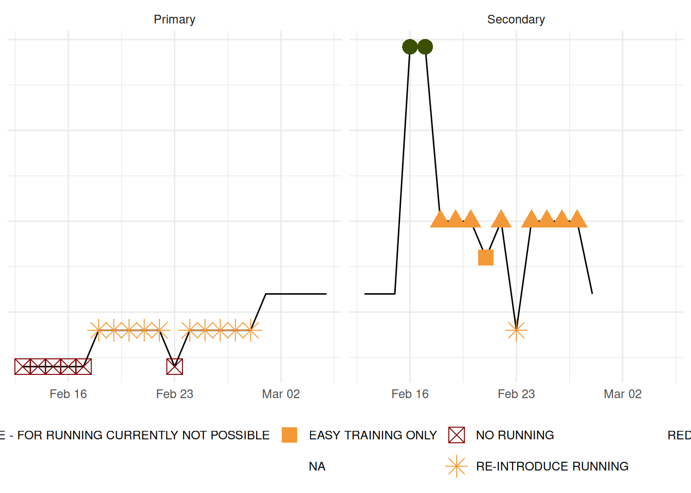
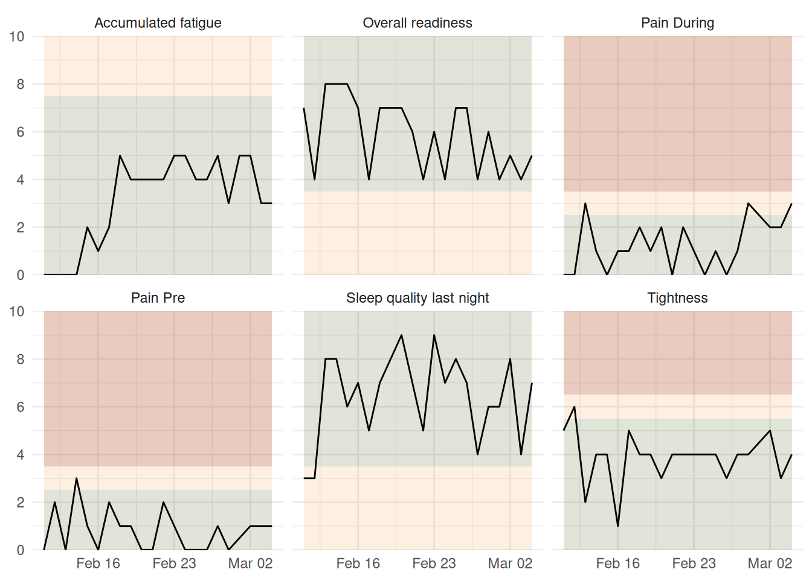
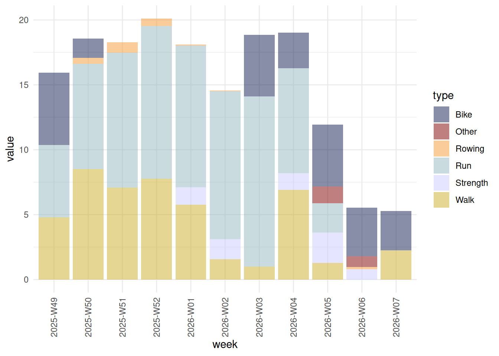
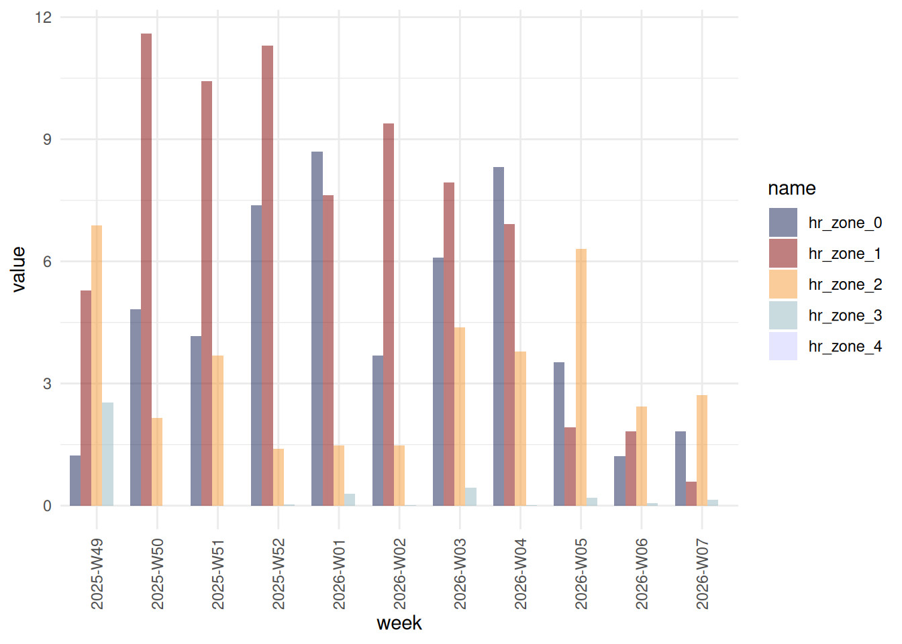

RE-INTRODUCE RUNNING
Training Status
Details for Today’s Training Status
Message: Gradually increase running. Follow back-from-injury protocol: 1 day on 1 day off for 4 days than two times 2 days on 1 day off. Start with run/walk workouts and stop immediately if pain increases during exercise. Even if only a bit.
What’s the problem: Some functional restriction present.
Which activities are blocked: NA
Second Status if Active
CAUTION
Details of the Second Status
Message: Caution advised. Monitor the development of pain, tightness, fatigue, sleep, and readiness closely over the next couple of days.
What’s the problem: Urge to push is getting to you. I know you want to push but trust the plan. You’re on a brilliant journey and we need that consistency much more then we need heroic workouts., Motivation below normal. What’s wrong? Think about why you are doing this. All the beautiful runs and at some point on the top of the podium. You can do this! If it persists take some time off and do things you enjoy.
Which activities are blocked: NA
Development of Training Status
[1] "2026-02-13"
[1] "2026-02-14"
[1] "2026-02-15"
[1] "2026-02-16"
[1] "2026-02-17"
[1] "2026-02-18"
Watch Out

Volume Development
Changed Heart Rate Zones for all types to the same as running to make it comparable on the 12th of February 2026 (calendar week 2026-W07). Also from this day on I will upload strength training separately. I want to keep track of my strength volume. However, strength training won’t increase TP fitness (TSS set to 0 manually).
Total Weekly Volume By Workout Type


Total Weekly Volume By Heart Rate Zone

